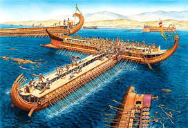

As Guerras Médicas
Diferente do que se pensa, as Guerras Médicas não tinha esse nome pois tinha muitos médicos. Elas tinham esse nome pois se referiam aos Medas, um povo que compos o império Persa. Afinal as Guerras Médicas foram a batalha travada entre os gregos e os persas.
O Surgimento dos Persas
Os persas surgiram na região atual do sudoeste do Irã, como pastores e fazendeiros. Então um homem, Ciro II, iniciou uma campanha que uniu o povo Medas. Eles então começaram a expandir território. Depois que Dário I assumiu poder (neto de Ciro II), a expansão territorial aumentou em 5 vezes, com ele conquistando áreas da Europa, Ásia e partes da África, incluindo a Egito.
A Revolta Jônica
Os persas, em sua expansão de domínio, acabaram por conquistar as cidades Jônicas. Após isso, começaram a cobrar impostos, que iam aumentando cada vez mais, os cidadões das cidades Jônicas estavam sofrendo, pois faltava comida e não tinham poder de opuniar a politica.
Assim, na cidade de Mileto, os cidadãos começaram a se expirar nos gregos, com sua autonomia e poder de liberdade politica, sendo Atenas a principal expiração. No ano de 499 a.C a revolta começou, com os Jônicos tomando bases persas locais e tentando cortar as fontes de suprimentos dos persas. Os Jônicos pediram ajuda aos gregos. Atenas e Erétria ajudaram mandando tropas para combater os persas.
Infelizmente, a Pérsia deu uma resposta rápida. Irritados pela revolta, mandaram exércitos para combater os Jônicos. A cidade de Mileto foi praticamente devastada, e os sobreviventes tiveram que conviver em um mundo onde execuções eram frequentes. A revolta foi derrotada em 494 a.C
Porém, os persas consideraram que os gregos tinham os desrespeitado por ajudar os Jônicos e a guerra foi declarada.
A Batalha da Maratona
Atenas, teve guerra declarada contra o império Persa, por ajudar as cidades Jônicas. O local escolhido para o confronto foi a cidade de Maratoma, na Ática. O exército Persa era composto por mais de 25.000 homens, enquanto o de Atenas era de 10.000. Porém, Atenas conseguiu apoio de 1.000 hoplitas, de Plateia. Os hoplitas, eram soldados armados com uma armadura pesada e resistente.
O general ateniense Milcíades decidiu que era crucial atacar antes que o inimigo pudesse se consolidar. Ele organizou seus homens em uma formação que maximizava a força da infantaria, priorizando o centro da linha. Porém, ainda com medo de que seu exército perde-se por conta do tamanho do outro, mandou o mensageiro Pheidippides, a Esparta em busca de apoio. No entanto, os espartanos estavam em um festival religioso e não puderam enviar tropas a tempo.
A batalha foi travada no ano de 490 a.C. Ela começou com um ataque frontal dos atenienses, que correram pela planície de Maratona em uma manobra surpreendente. A distância entre os dois exércitos era curta, permitindo um rápido engajamento. Os atenienses formaram uma linha mais longa, com uma concentração de forças no centro. Essa estratégia foi decisiva, pois os persas, que contavam com uma linha mais estreita, foram cercados. O confronto foi intenso. Os atenienses conseguiram romper as linhas persas no centro, enquanto suas alas protegidas resistiam ao ataque. O uso de armaduras e escudos pesados pelos hoplitas deu uma vantagem significativa.
A batalha terminou com a vitória dos atenienses, que continuaram a atcar o inimigo até ele se retirar em seus barcos. No final, o golpe de Atenas custou a vida de um número entre 6.000 a 7.000 soldados. Isso, enquanto os atenienses perderam apenas 192 homens.
O mensageiro Pheidippides, que correu de Maratona até Atenas, virou uma lenda, pois ao chegar lá, transmitiu uma mensagem de vitória. Logo após isso, Pheidippides morreu. E foi assim que surgiu a nossa Maratona conhecida hoje em dia.
Porém, Dário I não ia desistir tão fácilmente e começou a planejar como conquistar a Grécia. Porém, Dário estava ficando velho eno ano de 486 a.C, Dário morreu e seu filho, Xerxes I, assumiu o poder.
As Termópilas
Após a derrota na Batalha da Maratona, o império Persa se reorganizou, sobre o comando de Xerxes. Ele juntou um exército que ficou conhecido pelo seu tamanho de centenas de milhares. Os gregos percebendo que o exército era gigantesco, começou a formar alianças. Eles então formaram a Liga Helênica, formada pelas cidades-estados de Esparta, Atenas e outras cidades do Peloponeso.
Os persas decidiram tentar uma invasão em Esparta. Devido aos números massivos do inimigo, os gregos perceberam que teriam de usar estratégia. Eles então montaram uma defesa nas Termópilas, um desfiladeiro. Assim o inimigo não conseguiria cercar os gregos e teriam de ir em ondas. A defesa era formada por cerca de 1.500 homens de Atenas, 5 mil das outras cidades-estados, e é claro, os famosos 300 espartanos. Os espartanos vierem em poucos pois o povo não concordava em ir à guerra, por isso o rei Leônidas levou seus soldados secretamente ao desfiladeiro.
A batalha ocorreu por volta de 480 a.C. No primeiro dia da batalha, os gregos conseguiram segurar bem a o ataque aos persas, usando uma estratégia com escudos e lanças. No segundo dia os persas tentaram uma nova investida, utilizando uma chuva massiva de flechas. Mesmo assim, os gregos resisitiram bravamente, mesmo sendo um exército infinitamente menor.
Infelizmente, os gregos foram traídos por um homem chamado Efialtes. Ele revelou uma trilha secreta no qual os persas poderiam transpor o desfiladeiro, flanqueando os gregos. Assim que os gregos descobriram isso, quase todos fugiram sabendo que ficar era praticamente um ato suícida. Porém, os 300 espartanos resolveram permanecer no local. Foi uma batalha curta, os persas lançaram sua chuva de flechas. Quem sobreviveu foi morto pelos persas a espadadas. Ainda assim, os espartanos conseguiram matar Elfiates antes de serem derrotados.
A batalha de Salamina
Logo após a derrota nas Termópilas, os persas vendo que os espartanos não estavam afim de entrar na guerra por conta de religião, viraram-se para o sul da Grécia. Os persas marcharam para Atenas. A cidade tinha sido completamente abandonada, os gregos tinham fugido. Os persas queimaram a cidade. Os gregos começaram a pensar em um meio de destruir os persas. Eles perceberam que grande parte do problema era frota naval dos persas, que levava os soldados a Grécia e trazia suprimentos. Percebendo isso os gregos, com excessão de Esparta, montaram uma frota com 370 navios.
Porém a frota de Xerxes contia em torno de 1250 navios. Então o estratégia ateniense Themistocle, criou um plano para derrotar a frota Persa. Ele pretendia combater os persas no estreito de Salamina, entre a ilha de Salamina e o continente grego. Assim usariam uma estratégia parecida com as Termópilas, os navios grandes e lentos dos persas seriam sobrepujados pelos navios pequenos e mais manobraveis dos gregos.
Infelizmente, os persas tinham aprendido que se não fosse pela traição, talvez teriam perdido nas Termópilas. Não iriam para outro lugar apertado por conta própria. O ateniense Themistocle então, enviou uma mensagem falsa para os persas interceptarem. Nela, os gregos pareciam desesperados e estavam se organizando para fugir. Os persas então lançaram um ataque direto aos gregos que segundo a carta, estavam em fuga. Isso atraiu os persas para o estreito de Salamina.
Assim que a frota persa adentrou no estreito, os gregos atacaram. A batalha foi dura para os gregos, mas estes ainda assim conseguiram vencer, destruíndo e capturando quase toda frota persa. Com isso o imperador persa Xerxes deixou a Grécia e retornou ao seu reino. Tudo isso aconteceu pouco tempo depois das Termópilas, ainda no ano do 480 a.C.

A batalha de Plateia
Embora Xerxes tivesse fugido da Grécia, e sua frota naval tivesse sido destruída, ainda havia um poderoso exército que tinha destruíndo muitas cidades. Eram os persas remanecentes das Termópilas, grande parte daquele exército tinha fugido com Xerxes após a batalha da Salamina. Porém, devido a maioria dos barcos terem sido destruídos, um total de 100.000 homens havia continuado lá, com ordens para destruír os gregos. Eles tinham montado acampamento na antiga cidade de Plateia.
Enquanto isso, os gregos tentavam criar um plano para destruir o exército persa, mas estavam com muito pouco soldados. Todavia, eles foram surprendidos em uma manhã por um exército de Esparta. Assim, os espartanos explicaram que durante a batalha nas Termópilas, o rei Leônidas sabia que não conseguiria vencer aquela batalha. Também sabia que os gregos iriam perder, pois devido a fatores religiosos, os espartanos se recusavam a ir à guerra sem a benção de um oráculo. Por isso, seus 300 voluntários ficaram. Com esse sacríficio, os espartanos perceberam que deviam ir à guerra, tanto para se vingar tanto para honrar os 300 soldados que tombaram.
Os espartanos estavam vestidos com armaduras hoplitas, ou seja armaduras fortes e resistentes, mesmo que um tanto pesadas. Mas devido à sua ira e sede de vingança, os espartanos conseguiram força para agir como se aquela fosse uma armadura normal. O exército da Liga Helênica era composto por cerca de 40.000 homens e atacaram o acampamento persa no ano de 479 a.C. O comandante espartano Pausânias liderou o ataque. Os gregos formaram uma grande frente de batalha, com a ala direita sendo composta pelos espartanos, a esquerda por outra cidades do Peloponeso. Os atenienses se posicionaram na retaguarda dos persas, não atacando apenas se os persas tentassem fugir para aquele lado.
A batalha começou e o comandante espartano Pausânias, usou antigas estratégias militares e conhecendo o terreno, posicionou suas tropas de modo a limitar as opções de manobra persa. O erro final dos persas foi quando o comandante deles, Mardônio, tentou usar sua vantagem númeria para atravessar o centro da linha grega. Falhou, causando falhas no meio de sua linha de frente. Para corrigir essas falhas, trouxe homens das pontas da sua linha da frente para que os gregos não a rompesse no meio. Porém isso enfraqueceu as pontas, e a ala direita consiguiu quebrar a frente dos persas, matando seu comandante, Mardônio.
Assim, os persas perderam completamente o seu moral e depois de alguns minutos onde só havia perdas e nenhum progresso, os persas tentaram fugir, sendo cercados pelos atenienses. Naquele dia, os gregos botaram fim no domínio do império persa sobre a Grécia. A Pérsia tinha tomado um tremendo golpe que tinha acabado com seu exército de 300.000. Embora tivessem tentado, os persas nunca mais conseguiram ameaçar significativamente a Grécia tentando um ataque aqui, e outro ali.
A Liga de Delos
Embora os persas nunca mais terem sido uma preucupação crítica aos gregos, as tentativas de ataques os estavam incomodando. Por isso, Atenas criou a Liga de Delos, uma aliança contra os persas. Infelizmente, essa liga seria usada para a supremacia de Atenas, criando praticamente, um império ateniense.